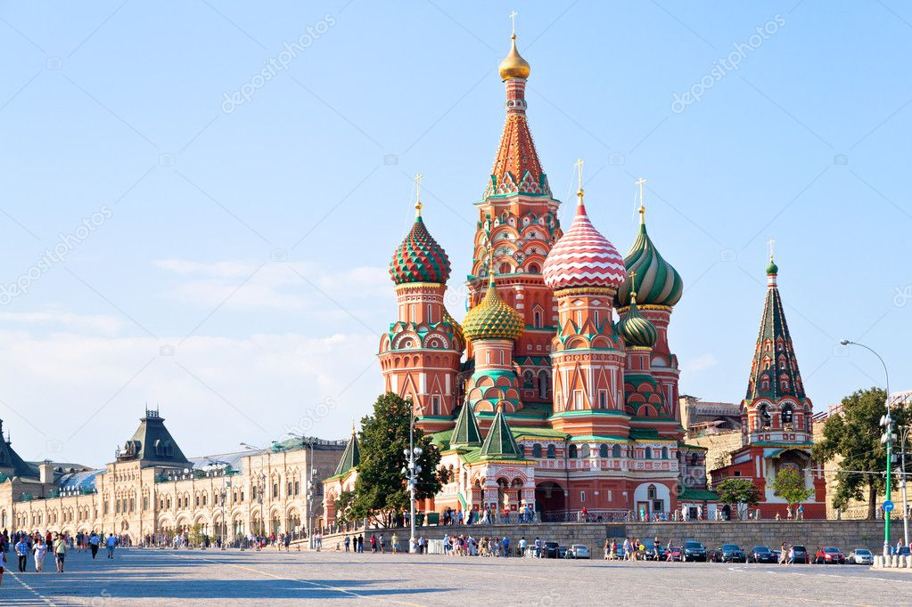

Москва Википедия

Географическое положение
Часовой пояс
Климат Москвы
Национальный состав Москвы
Москва — столица Российской Федерации, город федерального значения, административный центр Центрального федерального округа и центр Московской области, в состав которой не входит. Крупнейший по численности населения город России (население на 1 января 2012 года — 11 612 943 человек ), второй по величине город Европы, входит в десятку крупнейших городов мира. Центр Московской городской агломерации.
Историческая столица Великого княжества Московского, Русского царства, Советской России и СССР. Город-герой. В Москве находятся федеральные органы государственной власти Российской Федерации (за исключением Конституционного суда), органы местного самоуправления, посольства иностранных государств, штаб-квартиры большинства крупнейших российских коммерческих организаций и общественных объединений. Журнал Foreign Policy ставит Москву в 2010 году на 25 место глобальных городов, вносящих значительный вклад в развитие мировой цивилизации.
Расположена на реке Москве в центре Восточно-Европейской равнины, в междуречье Оки и Волги, приблизительно на одной широте с городами: Красноярск, Омск, Челябинск, Казань, Калининград, Копенгаген, Глазго.
Москва — важный туристический центр России; Московский Кремль, Красная площадь, Новодевичий монастырь и Церковь Вознесения в Коломенском входят в список Всемирного наследия ЮНЕСКО. Она является также важнейшим транспортным узлом. Город обслуживают 6 аэропортов, 9 железнодорожных вокзалов, 3 речных порта (имеется речное сообщение с морями бассейнов Атлантического и Северного Ледовитого океанов). С 1935 года в столице работает метрополитен.
Географическое положение
Москва находится в центре европейской части России, в междуречье Оки и Волги, на стыке Смоленско-Московской возвышенности (на западе), Москворецко-Окской равнины (на востоке) и Мещёрской низменности (на юго-востоке). Территория города на 2010 год составляет 1081 км2, что делает его самым маленьким по площади субъектом Российской Федерации. Основная часть (877 км2) находится внутри кольцевой автомагистрали (МКАД), остальные 204 км2 — за кольцевой автодорогой.
Средняя высота над уровнем моря составляет 156 м. Наивысшая точка находится на Теплостанской возвышенности и составляет 255 м, самая низкая точка — вблизи Бесединских мостов, где река Москва покидает город, высота этой точки над уровнем моря составляет 114,2 м. Протяжённость Москвы (без учёта чересполосных участков) с севера на юг в пределах МКАД — 38 км, за пределами МКАД — 51,7 км, с запада на восток — 39,7 км.
Город располагается на обоих берегах реки Москвы в её среднем течении. Помимо этой реки, на территории города протекает несколько десятков других рек, наиболее крупные из которых — притоки Москвы, в частности Сходня, Химка, Пресня, Неглинная, Яуза и Нищенка (левые), а также Сетунь, Котловка и Городня (правые). Многие малые реки (Неглинная, Пресня и др.) в пределах города протекают в коллекторах. В Москве много и других водоёмов: более 400 прудов и несколько озёр.
Часовой пояс
Москва находится в часовом поясе, обозначаемом по международному стандарту как Moscow Time Zone (MSK). Смещение относительно Всемирного координированного времени UTC составляет +3:00.
С 27 марта 2011 года, после введения постоянного летнего времени, и с учётом действующего с 1930 года декретного времени, время в Москве отличается от поясного на два часа.
Климат Москвы
Климат Москвы умеренно-континентальный: сильные морозы и палящий зной здесь довольно редки,
но отклонения от нормы бывают часто. Самым холодным месяцем года является январь (его средняя температура составляет -9,3 градуса),
а самым теплым июль (средняя температура +18,2 градусов).
За год в Москве и прилегающей к ней территории выпадает от 582 до 620 мм атмосферных осадков.
Нередким явлением на территории Москвы являются туманы.
Свои особенности имеет воздушный режим Москвы: воздушные потоки как бы стекаются в центральную часть города, принося с собой атмосферные осадки или зной.
Национальный состав Москвы
| Национальности населения Москвы |
Национальность |
Удельный вес |
| Русские | 91,6 |
| Украинцы | 1,4 |
| Татары | 1,4 |
| Армяне | 1,0 |
| Азейбарджанцы | 0,5 |
| Евреи | 0,5 |
| Белорусы | 0,4 |
| Другие национальности от | от 0,3 |
| до 0,03 |
Наверх
Ответить на вопросы